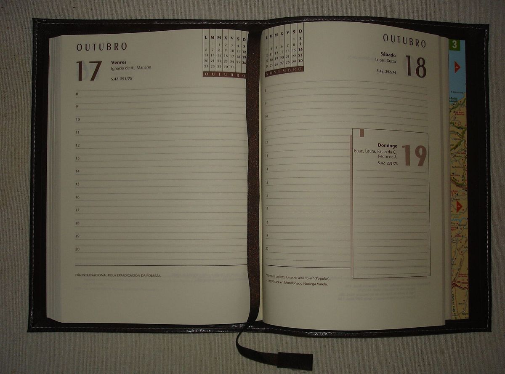
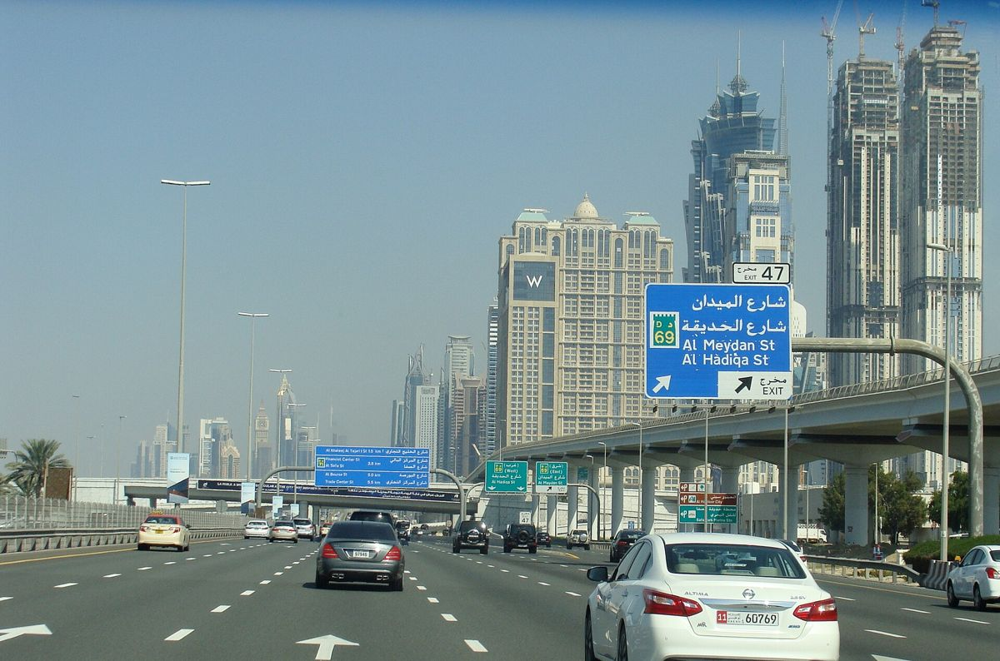

Ask a UAE mover for a price on two different dates and you might get two different numbers for the same job. That is not unusual. Like airlines and hotels, moving companies have busy and quiet periods, and demand affects both price and availability. Understanding the pattern helps you choose a date that works for your budget as well as your calendar.
Why dates affect price
A moving company has a fixed number of crews and trucks. On some days, everyone wants them. On others, the trucks sit in the yard. When demand is high, companies can be more selective, add surcharges or simply be fully booked. When it is low, they may be more flexible on price or extras.

The effect is rarely dramatic for a small move, but for a large villa or a multi-day job, timing can make a noticeable difference.
Weekends
In the UAE, many people prefer to move on Saturdays and Sundays so they do not lose working days. That makes weekends popular. Some movers charge a weekend surcharge, others simply have fewer slots. Building management offices in some towers also restrict moves on certain days or hours, which can squeeze weekend availability further.
If you can take a weekday off, it may be easier to book your preferred time slot at both buildings and with the mover.
Month-end and month-start
Many leases in Dubai and the other emirates begin or end on the first of the month. That clusters moves into the last few days of one month and the first few days of the next. Movers and building lifts both get busy. If your tenancy dates allow even a small overlap, moving a few days earlier or later can open up more options.
Summer and school holidays
The long summer break is a popular time for families to move, because children are out of school and many expats relocate between jobs. At the same time, summer heat affects how crews work. Long carries in high temperatures are tiring, and heat-sensitive items need care in transit.
Late summer, as families return before the school year, can also be busy. The weeks before school terms begin are often a crunch point for moves.
Year-end and the cooler months
The cooler months bring comfortable weather and steady demand. Some families move at the end of the calendar year to align with new jobs or leases starting in January. Others avoid the holiday season because they are travelling. Demand can vary from year to year, so ask movers directly how busy your chosen dates are.
Ramadan and public holidays
Working hours often change during Ramadan, and some buildings adjust moving hours too. Public holidays can affect permit offices and building management. Plan with these in mind and confirm working hours with your mover and both buildings.
How surcharges appear on quotes
Timing-related charges may appear as:
- A weekend or public holiday surcharge
- An evening or night-move premium
- A higher hourly rate during peak periods
- A minimum booking charge on busy days
Not every mover uses surcharges. Some simply quote a higher fixed price for busy dates. When comparing, ask each company whether their price would change on a different day.
Getting good value in busy periods
- Request quotes early, ideally several weeks before your date
- Ask for prices on two or three alternative dates
- Consider a weekday morning if your schedule allows
- Book lift slots at both buildings as soon as you confirm the date
- Get the agreed date, time and price in writing
To see how different movers price your preferred dates, you can check current quotes by sending one request and receiving written replies by email or WhatsApp text.
Planning around the heat
If you are moving in summer, ask the mover about early-morning starts and how they protect heat-sensitive items such as candles, electronics, vinyl records and medicines. Keep water available for the crew and for yourself. Make sure the air conditioning at the new home is working before the truck arrives; it makes unloading and unpacking much more comfortable. For public guidance on working in high temperatures, the UAE government portal shares official information on summer working rules.
Flexibility is the best discount
The single most useful thing you can bring to a moving negotiation is flexibility. If you can move on a weekday, a few days away from month-end or outside the busiest holiday weeks, you will usually have more choice of movers and time slots. That choice makes it easier to find a company you trust at a price you are comfortable with.

When flexibility is not possible
Sometimes the date is fixed by a lease end, a flight or a school start. In that case, book as early as you can, confirm everything in writing and ask whether a smaller crew over two days would be cheaper than a large crew on one peak day. Some movers can also pack in advance on a quieter day and load on the fixed date, which spreads the workload.
Summary
Moving prices in the UAE follow demand. Weekends, month-ends, summer and the run-up to school terms tend to be busier, and busy days can mean higher prices or fewer slots. Ask for quotes early, compare a few dates and keep your plans as flexible as your lease allows.